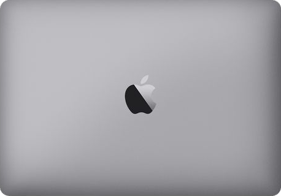

Featured
Work
Experiences on
Professional
JPMorgan Chase & Co.
Software Engineer II
Jan 2026 – Present
Software Engineer I
June 2023 – Jan 2026
Software Engineer Intern
Feb 2023 – June 2023
$ cat impact.txt
5 minutes instead of 2 days (99% reduction)
$ ls stack/
Python FastAPI LangGraph RAG Pipelines React Kubernetes
_1/9
AI Audit Evidence Platform
MXP – Top-3 Finalist
Built an automated audit-evidence platform (Python, FastAPI, LangGraph, RAG Pipelines, React, Kubernetes) after mapping internal and external audit requirements across 10+ stakeholder workflows. The system indexes repository code alongside Git diffs, database state, and ServiceNow (SNOW) tickets to assemble first-draft audit evidence in 5 minutes instead of 2 days (99% reduction). Selected as a Top-3 Finalist in JPMC’s firmwide Market Excellence Program (MXP) and demoed to leadership for adoption across multiple lines of business.
$ cat impact.txt
5x the throughput
$ ls stack/
Python Apache Avro AMPS
_2/9
Core Trade & Risk Management Platform
Drove key serialization and feed-processing changes in a team-led re-architecture of Python and Apache Avro equity trade pipelines using high-throughput pub/sub messaging (AMPS), reactive dependency-graph computation, and distributed object storage. Eliminated schema-serialization bottlenecks and hardened feed delivery across 3 regions (EMEA, AMER, and APAC), helping achieve 5x the throughput of the previous platform while supporting $50M+ in daily equity derivatives and stock trading volume.
$ cat impact.txt
98% (from 2 hours down to 2 minutes)
$ ls stack/
NumPy Pandas Python
_3/9
High-Throughput Risk & Regulatory Reporting
Cut end-to-end execution times for daily regulatory and risk reporting pipelines by 98% (from 2 hours down to 2 minutes). Replaced sequential, I/O-heavy data transformations with vectorized NumPy and Pandas computation, read-through caching, and Python multiprocessing.
$ cat impact.txt
300K+ rows/day
$ ls stack/
Amazon S3 AWS SQS Apache Spark AWS Glue Apache Iceberg Parquet
_4/9
Cloud Data Lakehouse & Orchestration
Designed and shipped an event-driven cloud data lakehouse on Amazon S3 consolidating multi-regional equity and derivatives transaction feeds (300K+ rows/day). Configured AWS SQS-triggered Apache Spark (AWS Glue) ETL jobs writing into partitioned, ACID-compliant Apache Iceberg (Parquet) tables to eliminate full-bucket scans and speed up downstream analytical queries.
$ cat impact.txt
Project Chirality
Trade Lifecycle Telemetry & STP Scoring
_5/9
Trade Lifecycle Telemetry & STP Scoring
Project Chirality
Led the equity derivatives engineering workstream for a firmwide straight-through processing (STP) initiative. Built a production monitoring and scoring engine that flags manual trade touchpoints across bookings and amendments, grading internal platforms on automated vs. manual processing percentages and establishing a manual-touchpoint benchmark to prioritize future engineering roadmaps.
$ cat impact.txt
Agentic Operations Diagnostics Platform
$ ls stack/
Python FastAPI Tornado LangGraph React TypeScript MCP
_6/9
Agentic Operations Diagnostics Platform
Developed an internal diagnostics platform for middle-office operations using Python, FastAPI, Tornado, LangGraph, React, and TypeScript. Connected a multi-step tool-calling state graph and MCP integrations across 16 backend diagnostic APIs and an incrementally indexed AST codebase RAG pipeline so operations teams can investigate blocked trades without escalating to engineering.
From college days
Side Projects

7/9
Code For Good 2022
Code For Good is an annual Hackathon conducted by JP Morgan Chase for students in their second and third years of Engineering. We built a technology-based solution for a real-world NGO problem, and this hackathon is where my journey at JPMorgan Chase began: it led to my internship and full-time Software Engineer role.
Discover

8/9
Sudoku Solver
A web application that solves Sudoku puzzles automatically, built with React using a backtracking algorithm. Hosted on : https://sayak2k1maruti.github.io/Sudoku-Solver/
Discover

9/9
FlipBoard : news web app
A web app to read daily news, built with Next.js and a news API. Hosted on : https://news-app-sayak.vercel.app/
Discover
Research
Publication
S. Das, A. K. Mandal, R. Ghatak, A. Banerjee, and T. Chakravarty, “Design of Reconfigurable Metasurface for Beam Steering Applications in Next Generation Communication Systems”, 2023 8th International Conference on Computers and Devices for Communication (CODEC), Kolkata, India, 2023.
Hi, I am Sayak
I am a
Software Engineer II @ JPMorgan Chase & Co. · 3.5+ years

Click here to launch my interactive resume game in full screen or
play on above virtual LaptopBest played on a laptop or desktop screen.
About Me
Hello There
I am Sayak. By day (and occasionally during release weeks, by night) I am a Software Engineer II at JPMorgan Chase & Co. in Bengaluru, building the systems behind equity trading and risk.
My favourite kind of work is making slow things embarrassingly fast. A regulatory report that used to take 2 hours now finishes in 2 minutes, and audit evidence that ate up two whole days now shows up in five minutes, courtesy of an AI agent that, unlike me, never needs a coffee break.
I trained as an Electronics engineer at NIT Durgapur, wandered into software through a hackathon, and never found the exit. Outside of work I am still the same social person who loves new challenges, new people, and debating tabs vs spaces with anyone who has five minutes.


$ cat sayak.json
{
"name": "Sayak Das",
"role": "Software Engineer II",
"company": "JPMorgan Chase & Co.",
"experience": "3.5+ years",
"based_in": "Bengaluru, IN",
"education": "B.Tech ECE @ NIT Durgapur '23, CGPA 9.03",
"email": "sayakdas2k1@gmail.com"
}
$ _
Thanks for scrolling this far! The quickest way to reach me is sayakdas2k1@gmail.com, and I promise to reply faster than those reports used to run.

© 2026 by Sayak Das
sayakdas2k1@gmail.com